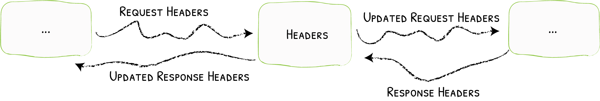

Headers¶
Adding Headers to the Request / Response

The Headers middleware can manage the requests/responses headers.
Configuration Examples¶
Adding Headers to the Request and the Response¶
Add the X-Script-Name header to the proxied request and the X-Custom-Response-Header to the response
labels:
- "traefik.http.middlewares.testHeader.headers.customrequestheaders.X-Script-Name=test"
- "traefik.http.middlewares.testHeader.headers.customresponseheaders.X-Custom-Response-Header=value"apiVersion: traefik.containo.us/v1alpha1
kind: Middleware
metadata:
name: testHeader
spec:
headers:
customRequestHeaders:
X-Script-Name: "test"
customResponseHeaders:
X-Custom-Response-Header: "value""labels": {
"traefik.http.middlewares.testheader.headers.customrequestheaders.X-Script-Name": "test",
"traefik.http.middlewares.testheader.headers.customresponseheaders.X-Custom-Response-Header": "value"
}labels:
- "traefik.http.middlewares.testheader.headers.customrequestheaders.X-Script-Name=test"
- "traefik.http.middlewares.testheader.headers.customresponseheaders.X-Custom-Response-Header=value"[http.middlewares]
[http.middlewares.testHeader.headers]
[http.middlewares.testHeader.headers.customRequestHeaders]
X-Script-Name = "test"
[http.middlewares.testHeader.headers.customResponseHeaders]
X-Custom-Response-Header = "value"http:
middlewares:
testHeader:
headers:
customRequestHeaders:
X-Script-Name: "test"
customResponseHeaders:
X-Custom-Response-Header: "value"Adding and Removing Headers¶
X-Script-Name header added to the proxied request, the X-Custom-Request-Header header removed from the request,
and the X-Custom-Response-Header header removed from the response.
Please note that is not possible to remove headers through the use of labels (Docker, Rancher, Marathon, ...) for now.
apiVersion: traefik.containo.us/v1alpha1
kind: Middleware
metadata:
name: testHeader
spec:
headers:
customRequestHeaders:
X-Script-Name: "test" # Adds
X-Custom-Request-Header: "" # Removes
customResponseHeaders:
X-Custom-Response-Header: "" # Removeslabels:
- "traefik.http.middlewares.testheader.headers.customrequestheaders.X-Script-Name=test""labels": {
"traefik.http.middlewares.testheader.headers.customrequestheaders.X-Script-Name": "test",
}[http.middlewares]
[http.middlewares.testHeader.headers]
[http.middlewares.testHeader.headers.customRequestHeaders]
X-Script-Name = "test" # Adds
X-Custom-Request-Header = "" # Removes
[http.middlewares.testHeader.headers.customResponseHeaders]
X-Custom-Response-Header = "" # Removeshttp:
middlewares:
testHeader:
headers:
customRequestHeaders:
X-Script-Name: "test" # Adds
X-Custom-Request-Header: "" # Removes
customResponseHeaders:
X-Custom-Response-Header: "" # RemovesUsing Security Headers¶
Security related headers (HSTS headers, SSL redirection, Browser XSS filter, etc) can be added and configured per frontend in a similar manner to the custom headers above. This functionality allows for some easy security features to quickly be set.
labels:
- "traefik.http.middlewares.testHeader.headers.framedeny=true"
- "traefik.http.middlewares.testHeader.headers.sslredirect=true"apiVersion: traefik.containo.us/v1alpha1
kind: Middleware
metadata:
name: testHeader
spec:
headers:
frameDeny: "true"
sslRedirect: "true"labels:
- "traefik.http.middlewares.testheader.headers.framedeny=true"
- "traefik.http.middlewares.testheader.headers.sslredirect=true""labels": {
"traefik.http.middlewares.testheader.headers.framedeny": "true",
"traefik.http.middlewares.testheader.headers.sslredirect": "true"
}[http.middlewares]
[http.middlewares.testHeader.headers]
FrameDeny = true
SSLRedirect = truehttp:
middlewares:
testHeader:
headers:
FrameDeny: true
SSLRedirect: trueCORS Headers¶
CORS (Cross-Origin Resource Sharing) headers can be added and configured per frontend in a similar manner to the custom headers above. This functionality allows for more advanced security features to quickly be set.
labels:
- "traefik.http.middlewares.testheader.headers.accesscontrolallowmethods=GET,OPTIONS,PUT"
- "traefik.http.middlewares.testheader.headers.accesscontrolalloworigin=origin-list-or-null"
- "traefik.http.middlewares.testheader.headers.accesscontrolmaxage=100"
- "traefik.http.middlewares.testheader.headers.addvaryheader=true"apiVersion: traefik.containo.us/v1alpha1
kind: Middleware
metadata:
name: testHeader
spec:
headers:
accessControlAllowMethods:
- "GET"
- "OPTIONS"
- "PUT"
accessControlAllowOrigin: "origin-list-or-null"
accessControlMaxAge: 100
addVaryHeader: "true"labels:
- "traefik.http.middlewares.testheader.headers.accesscontrolallowmethods=GET,OPTIONS,PUT"
- "traefik.http.middlewares.testheader.headers.accesscontrolalloworigin=origin-list-or-null"
- "traefik.http.middlewares.testheader.headers.accesscontrolmaxage=100"
- "traefik.http.middlewares.testheader.headers.addvaryheader=true""labels": {
"traefik.http.middlewares.testheader.headers.accesscontrolallowmethods": "GET,OPTIONS,PUT",
"traefik.http.middlewares.testheader.headers.accesscontrolalloworigin": "origin-list-or-null",
"traefik.http.middlewares.testheader.headers.accesscontrolmaxage": "100",
"traefik.http.middlewares.testheader.headers.addvaryheader": "true"
}[http.middlewares]
[http.middlewares.testHeader.headers]
accessControlAllowMethods= ["GET", "OPTIONS", "PUT"]
accessControlAllowOrigin = "origin-list-or-null"
accessControlMaxAge = 100
addVaryHeader = truehttp:
middlewares:
testHeader:
headers:
accessControlAllowMethod:
- GET
- OPTIONS
- PUT
accessControlAllowOrigin: "origin-list-or-null"
accessControlMaxAge: 100
addVaryHeader: trueConfiguration Options¶
General¶
Warning
If the custom header name is the same as one header name of the request or response, it will be replaced.
Note
The detailed documentation for the security headers can be found in unrolled/secure.
customRequestHeaders¶
The customRequestHeaders option lists the Header names and values to apply to the request.
customResponseHeaders¶
The customResponseHeaders option lists the Header names and values to apply to the response.
accessControlAllowCredentials¶
The accessControlAllowCredentials indicates whether the request can include user credentials.
accessControlAllowHeaders¶
The accessControlAllowHeaders indicates which header field names can be used as part of the request.
accessControlAllowMethods¶
The accessControlAllowMethods indicates which methods can be used during requests.
accessControlAllowOrigin¶
The accessControlAllowOrigin indicates whether a resource can be shared by returning different values.
The three options for this value are:
origin-list-or-null*null
accessControlExposeHeaders¶
The accessControlExposeHeaders indicates which headers are safe to expose to the api of a CORS API specification.
accessControlMaxAge¶
The accessControlMaxAge indicates how long a preflight request can be cached.
addVaryHeader¶
The addVaryHeader is used in conjunction with accessControlAllowOrigin to determine whether the vary header should be added or modified to demonstrate that server responses can differ beased on the value of the origin header.
allowedHosts¶
The allowedHosts option lists fully qualified domain names that are allowed.
hostsProxyHeaders¶
The hostsProxyHeaders option is a set of header keys that may hold a proxied hostname value for the request.
sslRedirect¶
The sslRedirect is set to true, then only allow https requests.
sslTemporaryRedirect¶
Set the sslTemporaryRedirect to true to force an SSL redirection using a 302 (instead of a 301).
sslHost¶
The sslHost option is the host name that is used to redirect http requests to https.
sslProxyHeaders¶
The sslProxyHeaders option is set of header keys with associated values that would indicate a valid https request.
Useful when using other proxies with header like: "X-Forwarded-Proto": "https".
sslForceHost¶
Set sslForceHost to true and set SSLHost to forced requests to use SSLHost even the ones that are already using SSL.
stsSeconds¶
The stsSeconds is the max-age of the Strict-Transport-Security header.
If set to 0, would NOT include the header.
stsIncludeSubdomains¶
The stsIncludeSubdomains is set to true, the includeSubdomains will be appended to the Strict-Transport-Security header.
stsPreload¶
Set stsPreload to true to have the preload flag appended to the Strict-Transport-Security header.
forceSTSHeader¶
Set forceSTSHeader to true, to add the STS header even when the connection is HTTP.
frameDeny¶
Set frameDeny to true to add the X-Frame-Options header with the value of DENY.
customFrameOptionsValue¶
The customFrameOptionsValue allows the X-Frame-Options header value to be set with a custom value.
This overrides the FrameDeny option.
contentTypeNosniff¶
Set contentTypeNosniff to true to add the X-Content-Type-Options header with the value nosniff.
browserXssFilter¶
Set browserXssFilter to true to add the X-XSS-Protection header with the value 1; mode=block.
customBrowserXSSValue¶
The customBrowserXssValue option allows the X-XSS-Protection header value to be set with a custom value.
This overrides the BrowserXssFilter option.
contentSecurityPolicy¶
The contentSecurityPolicy option allows the Content-Security-Policy header value to be set with a custom value.
publicKey¶
The publicKey implements HPKP to prevent MITM attacks with forged certificates.
referrerPolicy¶
The referrerPolicy allows sites to control when browsers will pass the Referer header to other sites.
featurePolicy¶
The featurePolicy allows sites to control browser features.
isDevelopment¶
Set isDevelopment to true when developing.
The AllowedHosts, SSL, and STS options can cause some unwanted effects.
Usually testing happens on http, not https, and on localhost, not your production domain.
If you would like your development environment to mimic production with complete Host blocking, SSL redirects, and STS headers, leave this as false.